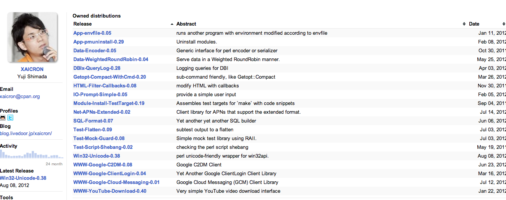

今年の Google I/O で突然の終了宣言＼(^o^)／
YAPC::Asia 2012 - 09/28 at 東京大学
Yuji Shimada (xaicron)
CPAN Author

デザインセンスがとてもよい
New! 最近ぎっくり腰になりました
春頃に「Mobage を支える技術」という本を書きました。
⇡これね
他にうちの部では
@zigorou
@nekokak
の二人が書いています。
JPA 理事
JPA 理事
路傍の石
はい
marqs さんには寿司ビールをおごろうと思います。
みんな買ってね♡
宣伝終わり
発表中に dankogai ばりにガンガン質問してもらって大丈夫です。
今日は
今日は
今日は
というような話はしないのでご了承ください
@Yappo
「個人的には worker でのシグナル処理入ってて欲しかった。」
なるほど、
話しましょう
の前に
Parallel::Prefork を使った worker の実装例
use strict;
use warnings;
use DBI;
use Parallel::Prefork;
my $queue_table = 'neko_queue';
my $connect_info = [ ... ];
my $pm = Parallel::Prefork->new({
max_workers => 10,
trap_signals => {
TERM => 'TERM',
HUP => 'TERM',
},
});
while ($pm->signal_received ne 'TERM') {
$pm->start(sub {
my $q4m = DBI->connect(@$connect_info);
my $index = $q4m->selectrow_array(
'SELECT queue_wait(?)',
undef,
$queue_table,
);
return unless $index; # queue not found
my $queue = $q4m->selectrow_hashref(
'SELECT * FROM ' . $queue_table,
);
# do something
$q4m->do('SELECT queue_end()');
});
}
$pm->wait_all_children;
やったーできたよー！
...
Q. いまのコードの問題点はなにか？
Q. いまのコードの問題点はなにか？
A. シグナルを受け取ると子プロセスが処理中でも死ぬ
DEMO
...
while ($pm->signal_received ne 'TERM') {
$pm->start(sub {
# 追加
my $signal_received = 0;
$SIG{TERM} = sub {
$signal_received = 1;
};
my $q4m = DBI->connect(@$connect_info);
my $index = $q4m->selectrow_array(
'SELECT queue_wait(?)',
undef,
$queue_table,
);
return unless $index; # queue not found
# シグナルを受け取っていたら終了する
return if $signal_received;
my $queue = $q4m->selectrow_hashref(
'SELECT * FROM ' . $queue_table,
);
# do something
$q4m->do('SELECT queue_end()');
});
}
...
Q. これで問題ないか？
Q. これで問題ないか？
A. 全然ダメですね
DEMO
→ Sys::SigAction を使うと良い
use POSIX qw(:signal_h);
use Sys::SigAction qw(set_sig_handler);
...
while ($pm->signal_received ne 'TERM') {
$pm->start(sub {
my $signal_received = 0;
# Sys::SigAction を使う
my $h = set_sig_handler(
'TERM',
sub {
$signal_received = 1;
},
{ flags => SA_RESTART },
);
my $q4m = DBI->connect(@$connect_info);
my $index = $q4m->selectrow_array(
'SELECT queue_wait(?)',
undef,
$queue_table,
);
return unless $index; # queue not found
# シグナルを受け取っていたら終了する
return if $signal_received;
my $queue = $q4m->selectrow_hashref(
'SELECT * FROM ' . $queue_table,
);
# do something
$q4m->do('SELECT queue_end()');
});
}
...
Q. これで完璧か？
Q. これで完璧か？
A. 相変わらず queue_wait() でブロック
DEMO
...
while ($pm->signal_received ne 'TERM') {
$pm->start(sub {
my $signal_received = 0;
my $h = set_sig_handler(
'TERM',
sub {
$signal_received = 1;
# 追加
my $sth = $DBI::lasth;
if ($sth && $sth->{Database}{private_in_queue_wait}) {
die 'RECEIVED TERM SIGNAL into queue_wait()';
}
},
{ flags => SA_RESTART },
);
my $q4m = DBI->connect(@$connect_info);
$q4m->{private_in_queue_wait} = 1; # 追加
my $index = $q4m->selectrow_array(
'SELECT queue_wait(?)',
undef,
$queue_table,
);
$q4m->{private_in_queue_wait} = 0; # 追加
return unless $index; # queue not found
# シグナルを受け取っていたら終了する
return if $signal_received;
my $queue = $q4m->selectrow_hashref(
'SELECT * FROM ' . $queue_table,
);
# do something
$q4m->do('SELECT queue_end()');
});
}
...
ちなみに、queue_wait('table') はデフォルトでは 60秒で timeout しますが、
queue_wait('table', 10) とかやると 10秒で timeout します。
でも俺は即死して欲しいんだ！！！！！１１
Q. これで完璧か？
Q. これで完璧か？
A. まぁまぁいいけど、プロセスのライフサイクルが短すぎる
無駄
無駄
無駄
無駄
無駄
無駄
DEMO
# 追加
my $max_requests_per_child = 10000;
...
while ($pm->signal_received ne 'TERM') {
$pm->start(sub {
my $signal_received = 0;
my $h = set_sig_handler(
'TERM',
sub {
$signal_received = 1;
my $sth = $DBI::lasth;
if ($sth && $sth->{Database}{private_in_queue_wait}) {
die 'RECEIVED TERM SIGNAL into queue_wait()';
}
},
{ flags => SA_RESTART },
);
# ここでの接続を使いまわす
my $q4m = DBI->connect(@$connect_info);
# シグナルを受け取るか、max_requests_per_child までループ
my $i = 0;
while (!$signal_received && $max_requests_per_child > $i++) {
$q4m->{private_in_queue_wait} = 1;
my $index = $q4m->selectrow_array(
'SELECT queue_wait(?)',
undef,
$queue_table,
);
$q4m->{private_in_queue_wait} = 0;
return unless $index; # queue not found
return if $signal_received;
my $queue = $q4m->selectrow_hashref(
'SELECT * FROM ' . $queue_table,
);
# do something
$q4m->do('SELECT queue_end()');
}
});
}
...
というわけで、だいたいこんなかんじで worker を書いて使ってます。
はい
Remote Notification API の裏側
実際の処理の説明の前に
APNs と GCM (C2DM) の概要
いろんなモジュール
いろんなモジュール
というわけで作りました
use Net::APNs::Extended;
my $device_token = 'xxxxxxxxx'; # あとで説明
my $apns = Net::APNs::Extended->new(
is_sandbox => 1,
cert_file => 'xxx.pem', # 証明書
);
my $apns = Net::APNs::Extended->new(
is_sandbox => 1,
cert_file => 'apns.pem',
);
# send notification to APNs
$apns->send($device_token, {
aps => {
alert => "Hello, APNs!",
badge => 1,
sound => "default",
},
foo => [qw/bar baz/],
});
# if you want to handle the error
if (my $error = $apns->retrive_error) {
die Dumper $error;
}
なんで HTTP じゃないんや... (帯域とかわかるけどさ...)
の前に
今年の Google I/O で突然の終了宣言＼(^o^)／
とか書いたんだけどね...
＿人人人人人人 人人人人人人＿
＞ そこで颯爽と GCM の登場 ＜
￣Y^Y^Y^Y^Y^Y^Y^Y^Y^Y￣
さっそくモジュール書きました
use WWW::Google::Cloud::Messaging;
my $api_key = 'Your API Key';
my $gcm = WWW::Google::Cloud::Messaging->new(api_key => $api_key);
my $res = $gcm->send({
registration_ids => [ $reg_id, ... ],
collapse_key => $collapse_key,
data => {
message => 'blah blah blah',
},
});
die $res->error unless $res->is_success;
my $results = $res->results;
while (my $result = $results->next) {
my $reg_id = $result->target_reg_id;
if ($result->is_success) {
say sprintf 'message_id: %s, reg_id: %s',
$result->message_id, $reg_id;
}
else {
warn sprintf 'error: %s, reg_id: %s',
$result->error, $reg_id;
}
if ($result->has_canonical_id) {
say sprintf 'reg_id %s is old! refreshed reg_id is %s',
$reg_id, $result->registration_id;
}
}
HTTP 素晴らしいですね
APNs と GCM についての説明終わり
↓の図重要
大まかに、
の二種類がある。
API はここでそれぞれのリクエストに応じて q4m に enqueue する。
APNs と GCM でそれぞれ処理が違う
APNs
GCM
Net::APNs::Extended::Feedback を使うと簡単に無効な device token 一覧が取れる
use Net::APNs::Extended::Feedback;
my $feedback = Net::APNs::Extended::Feedback->new(
is_sandbox => 1,
cert_file => 'xxx',
);
my $feedbacks = $feedback->retrieve_feedback;
# [
# {
# time_t => ...,
# token_bin => ...,
# token_hex => ...,
# },
# {
# time_t => ...,
# token_bin => ...,
# token_hex => ...,
# },
# ...
# ]
Remote Notification 終わり
Leaderboard API の裏側
@hirose31 さんが書いた神の書があるので安心
などなど大量にある
最初は Redis::hiredis が高速だったので検討していたが、XS レベルで multi がバグっていた！！
パッチを送ったものの取り込まれない
仕方ないので、やりたいことが一応全部できる RedisDB を利用することに
しかし、当初は RedisDB は PP だったが、いつの間にか XS に！！
まだ XS 版は使っていません。
use RedisDB;
my $redis = RedisDB->new(host => 'localhost', port => 6379);
say $redis->set(foo => 'bar'); # 1
say $redis->get('foo'); # 'bar'
say '-'x80;
say $redis->send_command('SET', foo => 'hoge'); # 1
say $redis->send_command('GET', 'foo'); # 1
my @results = $redis->get_all_replies;
say Dumper \@results; # [ 'OK', 'hoge' ]
新しくスコアを登録したり、更新する場合は Redis と MySQL 両方に
Redis で発行しているコマンド
use RedisDB;
my $redis = RedisDB->new(...);
$redis->send_command('MULTI');
$redis->send_command('ZADD', 'score', $score, $user_id);
# このへんで付加情報的な奴の更新
$redis->send_command('EXEC');
実際は、小さいスコアを許容するかどうかで処理を変えていたりと複雑
だけど、基本的には ZADD してるだけです！
use RedisDB;
# score が高い人が 1位の場合
$redis->send_command('MULTI');
$redis->send_command('ZSCORE', 'score', $user_id);
$redis->send_command('ZREVRANK', 'score', $user_id);
$redis->send_command('EXEC');
@results = $redis->get_all_replies;
say Dumper {
score => $results[-1]->[0],
rank => $results[-1]->[1] + 1,
};
use RedisDB;
my $redis = RedisDB->new(host => 'localhost', port => 6379);
# score が高い人が 1位の場合
my $start = 1;
my $end = 100;
$redis->send_command('MULTI');
$redis->send_command('ZCOUNT', $score_key, '-inf', '+inf');
$redis->send_command('ZREVRANGE', $score_key, $start, $end, 'WITHSCORES');
$redis->send_command('EXEC');
@results = $redis->get_all_replies;
my $data = $results[0];
my $total = $results[-1][0];
my $data = $results[-1][1];
my $rs = [];
my $rank = $start;
for (my $i = 0; $i < @$data; $i += 2) {
push @$rs, {
rank => $rank++,
user_id => $data->[$i],
score => $data->[$i+1],
};
}
say Dumper [ $total, $rs ];
ご清聴ありがとうございました。
Question?
j or →: next
k or ←: prev
h or ↑: list
l or ↓: return
o or ↵: open
? or /: toggle this help